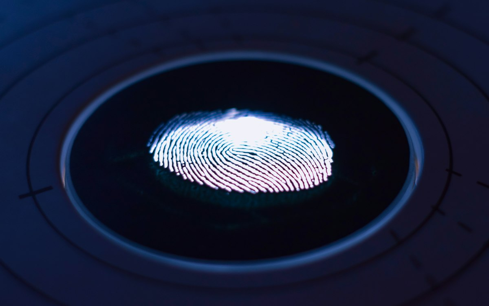
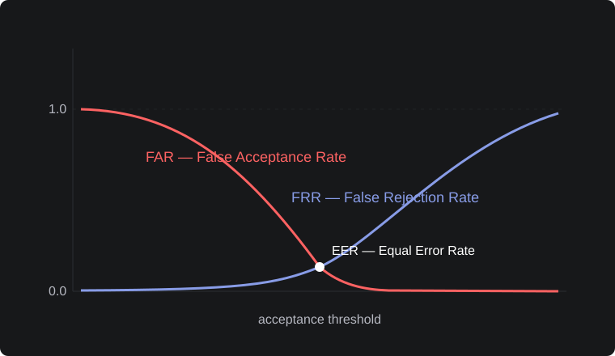

Biometric Verification Against Identity Fraud: A Guide for Lenders

Iriscan started from a lending problem. Consider a microfinance company whose borrowers often have no ID card, or have one that is easy to borrow or buy. The loss here is very specific: the same person takes loans under different names and never repays any of them. Biometric verification is the cheapest reliable fix we know, as long as it is designed for this problem and not copied from a bank onboarding flow built for a different one.
Three checks, three different problems
Is this the account holder? This is verification, 1:1. At login or before a payout, a selfie is compared with the face enrolled at onboarding. It stops account takeover and someone else collecting the loan.
Is this the person in the document? The selfie is compared with the photo in the ID card or in a digital credential. This is useful where documents are reliable, and weak where they are not.
Have we seen this person before under another name? This is identification, 1:N: a new applicant is compared with every borrower already enrolled. This check stops serial fraud, and most onboarding flows skip it, because it needs a database search rather than a single comparison.
Face or iris?
Face works on any phone, so it is the natural choice for self-service apps and for 1:1 checks. Its weakness is 1:N search at scale: as the database grows, look-alikes and family members start producing false hits, and a skilled fraudster can change appearance.
Iris needs a scanner, but it separates people far better, which makes it the right tool for de-duplication. A handheld USB scanner costs from under $110 to about $190 and plugs into the laptop or the Android tablet that an agent or a branch already uses. This way a lender with a network of agents can enroll each borrower once by iris and use face on the phone for everything after that.

Liveness
A face check without liveness detection can be passed with a printed photo or with a video played on another phone. At minimum, a passive liveness model should run on the selfie. For higher-risk actions, add a challenge such as "turn your head left", checked from the head pose. Iris capture with a dedicated scanner and an operator present is much harder to fool.
The deterrent works from day one
The strongest effect of biometrics does not need a large database. In a field experiment in Malawi, the riskiest borrowers who were fingerprinted at application repaid 92% of their loans two months after the due date, against 67% for those who were not. The lender shared data with nobody. Borrowers simply knew that they would be recognized under any name, so a default could not be left behind. Ghana's national health insurer saw the same thing: an official called its biometric system psychologically a deterrent. For a lender this means that the effect does not depend on the size of the database, and that it is worth telling borrowers about the scan openly.
Later: sharing without sharing data
Fraudsters move between lenders: a borrower blocked by one microfinance institution goes to the next one, and one lender's database cannot see that. A shared check needs several lenders on the same system, so it is the second step, not the first. How can lenders ask "does this person have an open loan elsewhere?" without handing each other names, photos or iris images? This is the question we worked on in INGRESS, a project funded by the EU's NGI ONTOCHAIN program. In INGRESS we built a biometric bureau that issues W3C Verifiable Credentials bound to the borrower's biometrics, so a person who loses a private key can prove their identity and get a new one. Next to it we built a prototype of a credit bureau that keeps the loan history and writes a hash of every loan to a public blockchain, so a credit history can be checked for tampering without disclosing anyone's private data.
Doing it on a small budget
- Onboarding app: face capture, passive liveness and selfie-to-document comparison on the phone with the open-source Iriscan Biometric SDK (Android, iOS, React Native). There are no per-check fees, and images do not have to leave the device.
- Agent or branch: an iris scanner and the Edge service, which keeps working when the connection drops and synchronizes later.
- Back office: 1:N search with the Cloud Iris API, or the same matcher on your own servers if regulation requires the data to stay in the country.
We recommend starting with a measurement: enroll a few thousand existing borrowers and run de-duplication against them. The number of duplicates you find gives you the business case.